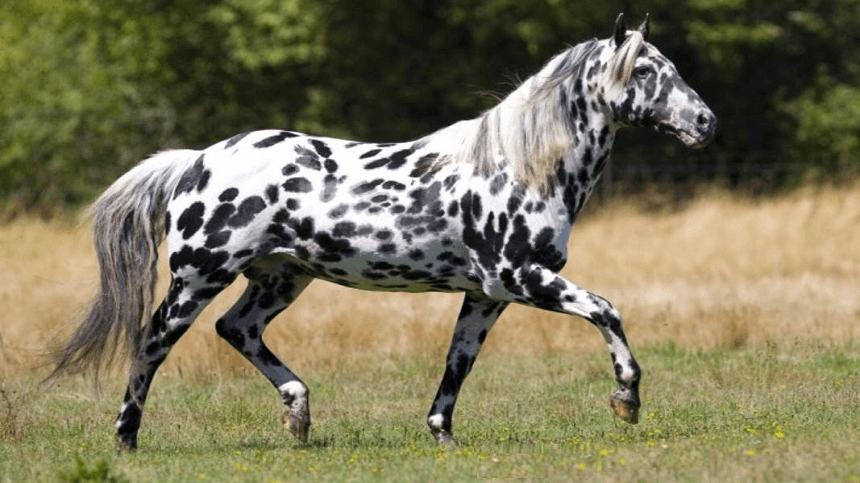

O cavalo Bretão é originário da região da Bretagne, na França. Seus moradores são os Betrons, daí o nome da raça. Ele é muito usado para a tração no seu país de origem, sendo seu porte musculoso uma característica marcante. Por ser um animal que possui a maior conversão alimentar entre os equinos, é também usado para a produção de carne e como ama de leite para outros cavalos, principalmente os de hipismo.

O cavalo Mangalarga é um genuíno brasileiro! Foi criado a partir de cavalos da raça Andaluz, Alter e Árabe, que vieram para o Brasil com a corte portuguesa. Ele é considerado o principal cavalo de sela do mundo! Sua principal característica é possuir pouco peso na frente e garupa mais robusta, o que proporciona leveza a seus movimentos, explosão nos arranques e comodidade ao seu cavaleiro. Por isso, sua marcha é considerada única!
O cavalo Quarto de Milha recebeu esse nome por ser um dos mais velozes em 402 metros, o que equivale a um quarto de milha. Ele é resultado do cruzamento de cavalos selvagens da América do Norte com os cavalos dos colonizadores ingleses. A raça foi a primeira a ser desenvolvida na América e conquistou muitos criadores e admiradores. Ela pode correr a 88 km/h e chegou ao Brasil em 1995. É um animal muito musculoso e pesa em torno de 500 kg. Também é uma raça bastante longeva.

O cavalo Pampa é originário do Brasil e recebe esse nome em homenagem ao estado do Rio Grande do Sul, que possui o codinome “Pampa”, e devido a sua coloração, que é malhada. Essa coloração é a mesma do cavalo Paint Horse Norte-americano, por isso, o Pampa é muitas vezes confundido com ele. Contudo, no Brasil, a raça vem sendo purificada para poder ser internacionalmente reconhecida.

O Appaloosa surgiu na região do Rio Pallose, quando os índios norte-americanos capturaram os cavalos de conquistadores espanhóis e gostavam particularmente dos malhados. Ele possui o corpo bastante parecido com o do Quarto de Milha e é muito resistente, mas sua característica mais marcante é a pelagem, que pode ter pintas ou manchas escuras espalhadas principalmente pela garupa e tórax.
O Puro-sangue lusitano é considerado o cavalo de sela mais antigo do mundo Ocidental. Com muitas idas e vindas, a raça foi muito usada no período da Guerra Napoleônica. Antes esse animal era tido como um cavalo militar, mas com o advento das artilharias e dos veículos motorizados, passou a ser admirado por sua beleza e docilidade. Começou a ser criado, então, para o lazer das famílias portuguesas e do mundo todo.
O cavalo Shire é conhecido mundialmente como a raça mais alta do mundo. É a raça da realeza inglesa. Possui as patas bastante largas e cobertas por uma densa pelagem, o que a faz ser bastante habilidosa para andar na neve e em terrenos acidentados. Atinge facilmente 1,80 m de altura e pesa em torno de uma tonelada. Com isso, é capaz de carregar até cinco vezes o seu peso. O cavalo Angus, do desenho da Disney “Valente”, é um representante da raça.
O cavalo Marwari é o cavalo originário do deserto da chamada região de Marwar, no Rajastão (Índia). Esta raça de cavalos podem suportar temperaturas altas e frio, e condições climáticas adversas. Originalmente trazido para a Índia por Genghis Khan e os seus invasores Mongóis vindos do norte, a raça tomou o nome da região Marwar, que significa literalmente “Terra de morte”, devido à sua inospitalidade e à natureza bélica da sua população. A raça Marwari, foi originalmente criada para a guerra.
Os cavalos Mustang apesar de terem fama de serem cavalos 100% Americanos, têm origem Europeia: descendem dos cavalos Espanhóis levados para a América pelos conquistadores. Atualmente, é a última espécie de cavalos selvagens que existe no continente Americano. Por isso, estão protegidos pelas leis Americanas. Maltratar ou matar um Mustang constitui uma infração federal nos EUA. Os Índios que viviam no continente Americano antes de chegarem os Europeus, não conheciam o cavalo e apesar de inicialmente terem medo deles, posteriormente compreenderam que podia ser um elemento decisivo, seja para caçar ou para a guerra.
Os cavalos da raça Percheron são oriundos da França e conhecidos por sua grande força associada a uma surpreendente elegância. Muito difundida nos Estados Unidos, a raça ganhou notoriedade por volta do século XIX, quando era responsável por quase todo o trabalho de tração em fazendas e na cidade. Com a modernização e a mecanização mundial, a raça foi quase totalmente esquecida, voltando a ter prestígio por volta do ano de 1920. Desde então, é utilizada em pequenas fazendas, como cavalo de tração, e para animar eventos e jogos, puxando charretes.